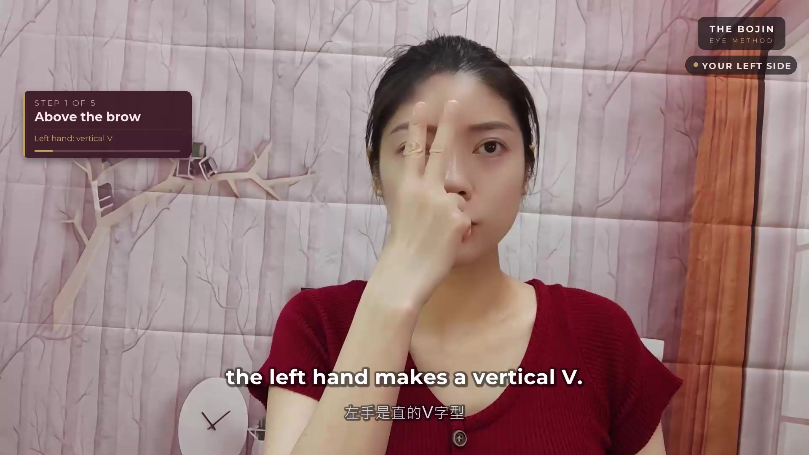

YOUR EYE-CARE STARTING POINT
“I don’t feel tired.
Why do my eyes
look like I am?”
You want your reflection to feel more like you.
Answer four simple questions. We’ll match you with a short beginner lesson and one small thing to learn today—no tool needed.
4 questions · Free result & short lesson · No email needed

REAL TEACHING, ONE DETAIL AT A TIMEA little insight.
A little confidence.
An introduction with Lan Yu-Ting
Question 1 of 4YOUR STARTING POINT